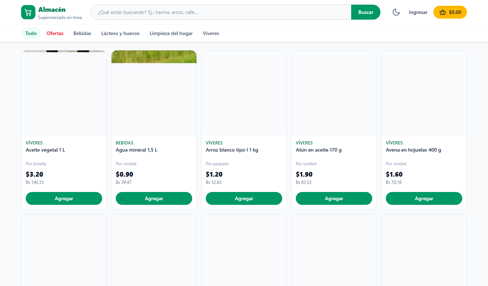
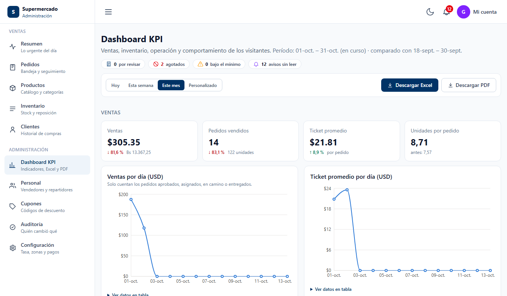
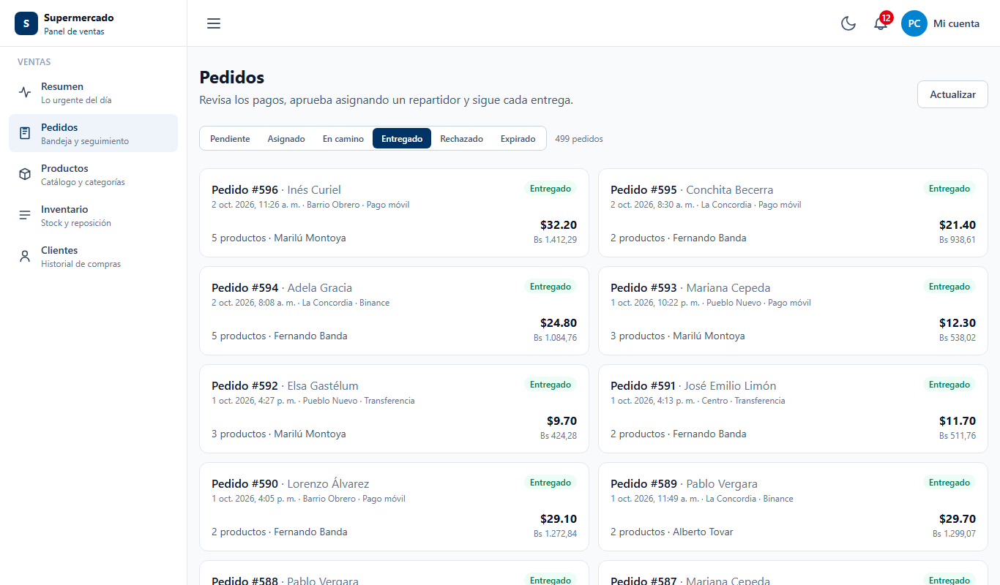
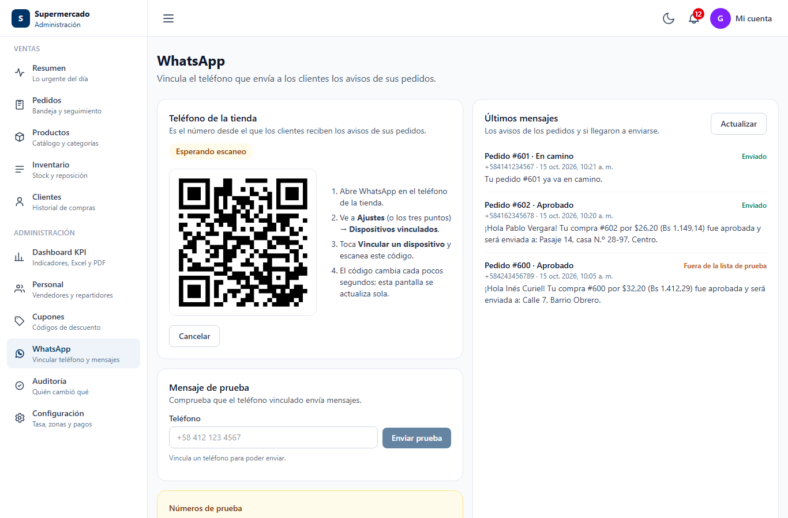

Sistema E-commerce para Supermercado
Tienda en línea, gestión de pedidos, inventario, entregas y analítica de negocio
Plataforma de comercio electrónico completa para un supermercado: los clientes compran en línea con precios en USD y bolívares según la tasa del día, y el personal gestiona cada pedido desde su recepción hasta la entrega. Está compuesta por una API REST en ASP.NET Core 10 con Onion Architecture sobre PostgreSQL, una SPA en React 19 y un servicio de notificaciones por WhatsApp.
Capturas

Catálogo público con precios en USD y Bs.

Dashboard de KPIs con informes en Excel y PDF

Bandeja de pedidos del área de ventas

Vinculación de WhatsApp por código QR
Características del Sistema
Pedidos e Inventario
- Pagos locales: Transferencia, pago móvil o Binance con comprobante adjunto.
- Reserva de stock: Se reserva al crear el pedido y se libera automáticamente si se rechaza o expira.
- Ciclo de vida: Pendiente → Aprobado → Asignado → En camino → Entregado.
- Job de expiración: Servicio en segundo plano que vence los pedidos sin revisión.
Logística y Notificaciones
- Área del repartidor: Pensada para el celular, con Google Maps, llamada y WhatsApp al cliente.
- WhatsApp (Baileys): Servicio Node.js que avisa al cliente cuando se aprueba su compra y cuando va en camino.
- Vinculación por QR: El gerente conecta el teléfono de la tienda desde el panel.
Seguridad
- JWT + Refresh Tokens: Firmados con HMAC-SHA256 y con rotación.
- RBAC: Roles superadmin, ventas, repartidor y cliente, validados en cada endpoint.
- Google Sign-In para clientes y BCrypt para el personal.
- Errores RFC 7807: Respuestas estandarizadas con Problem Details.
Analítica y Auditoría
- Dashboard de KPIs: Ventas, ticket promedio, horas pico, zonas, rotación y ocupación del almacén.
- Comportamiento de visitantes: Búsquedas, embudo de compra y abandono de carrito.
- Reportes: Exportación a Excel (ClosedXML) y PDF (QuestPDF).
- Auditoría de todos los cambios relevantes.
Arquitectura
Las dependencias apuntan siempre hacia el dominio; la regla se verifica automáticamente con pruebas de arquitectura (NetArchTest).
Calidad y DevOps
- Pruebas backend: Unitarias (xUnit + Moq), de arquitectura (NetArchTest) e integración contra PostgreSQL real (Testcontainers).
- Pruebas frontend: 455 pruebas con Vitest y React Testing Library.
- Docker multietapa: Imagen de la API en Alpine con usuario sin privilegios (de 243 MB a 155 MB).
- CI/CD: Pipeline en GitHub Actions; despliegue en Railway (API), Vercel (SPA) y Neon (PostgreSQL).
Tecnologías Utilizadas
Puesta en Marcha
La tienda queda disponible en http://localhost:8080 y la API en http://localhost:5000.
Desarrollo de Aplicaciones Web · UNET 2026 - Desarrollado por Gregorio Briceño, Francisco Sánchez y María Fernanda Cachopo Rojas